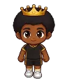
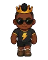
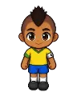
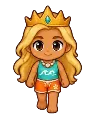
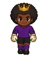
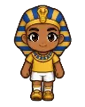
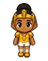
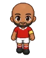

Lenda do Campinho Wiki
Every quest, opponent, item and place in the game — with what each opponent drops and where to find everything.
450 quests · 335 opponents · 654 items · 138 places
📜QuestsQuests by region and level, with where to find and how to get there.450👾OpponentsEvery opponent and boss, with everything they drop.335🎒ItemsGear, drinks, food, materials, collectibles and more.654🙋CharactersWho is who, where they are and what they do.209🗺️PlacesCities, hunting grounds and how to get to each one.138⚽MovesThe dribbles and kicks of each class, level by level.29🏛️MuseumThe Museum collections and where to find each collectible.47🛹Mounts and petsMounts, pets and decorations — and how to unlock them.10
Item types
Some bosses

Court KingLevel 28
Trovão, King of the Dirt PitchLevel 32
U-20 National Team CaptainLevel 43
The Wave QueenLevel 44
The Wall, Legendary GoalkeeperLevel 60
The Pharaoh of the BallLevel 60
The Golden SphinxLevel 66
AbutrikaLevel 70Made straight from the game data (version v412, updated 10/08/2026). Always the same as what you see in the game.